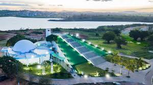
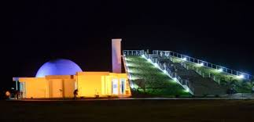
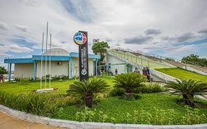

O local é o primeiro do Brasil, sendo um modelo Kappa, e ajuda estudantes e professores a desvendarem, através de uma viagem fantástica, as maravilhas do nosso universo. Oferece espaço para 235 pessoas sentadas em seu cine teatro, sala de observação com 70 lugares, ambiente de leitura, banheiros e elevador para cadeirantes. O Planetário foi construído nos moldes estadunidenses, introduzidos pela empresa Hiperlab. Há a possibilidade de avistar mais de 100 mil estrelas através de seu sistema digital. No espaço Brinca ciência, estudantes do Ensino Fundamental I e II, podem aprender na prática, brincando o que foi observado na cúpula.
  